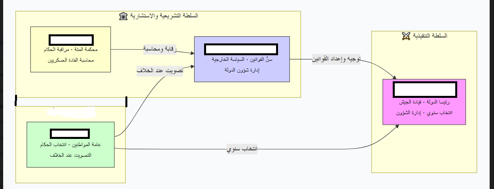
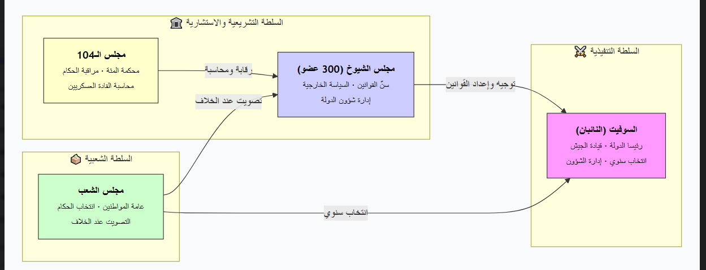

تمارين – قرطاج: المؤسسات السياسية والديانة
- مجلس الشعب:
- مؤسسة سياسية قرطاجية تضم المواطنين الأحرار فقط (استُبعد منها النساء والعبيد والأجانب). ينتخب أعضاء مجلس الشيوخ والحاكمين، وينظر في مسائل الحرب والسلم وتشريع القوانين. تعاظم دوره منذ أواخر القرن الثالث قبل الميلاد خاصة في عهد هانيبال. يتمتع بسلطة تشريعية.
- مجلس الشيوخ:
- يتكون من 300 عضو منتخب، بشرط المواطنة والوجاهة والثراء. كان السلطة الفعلية في قرطاج، يهيمن على المالية والسياسة الخارجية وإدارة الحرب، ويرسل القواد ويشرف على الحملات العسكرية. يضم لجاناً مصغرة مثل «لجنة الخمسة». يتمتع بسلطة تشريعية، ويشبه في بعض وظائفه مجلس الشيوخ الروماني.
- السفط:
- لفظ قريب من الجذر الفينيقي «شفط» بمعنى قاضٍ أو حاكم. يُنتخب اثنان من السفطين لمدة سنة واحدة، ويشترط فيهما المواطنة والثروة والكفاءة. يتمتعان بسلطة تنفيذية، ويرأسان مجلس الشيوخ ويقترحان القوانين، لكن سلطتهما مقيدة بالمؤسسات الأخرى، ويشبهان القنصلين في روما.
- محكمة المائة:
- تتكون من 104 أعضاء، تُعرف أيضاً بـ«محكمة المائة والأربعة». تنظر في قضايا أمن الدولة والخيانة ومحاسبة القادة العسكريين، وكانت أداة لمراقبة محاولات الاستبداد ومنع تركيز السلطة. سنة 196 ق.م سُنّ قانون بفضل هانيبال ينص على انتخاب القضاة لمدة سنة واحدة ومنع الترشح مرتين متتاليتين.


النظام السياسي القرطاجي نظام «مختلط» يقوم على أربع مؤسسات: مجلس الشعب الذي يتمتع بسلطة تشريعية، ومجلس الشيوخ الذي يتمتع بسلطة تشريعية أيضاً، والسفطان اللذان يتمتعان بسلطة تنفيذية، ومحكمة المائة التي تنظر في قضايا أمن الدولة والخيانة ومحاسبة القادة العسكريين. هذا التوزيع للسلطات جعل قرطاج أكثر استقراراً من الإمبراطوريات الشرقية وأكثر توازناً من المدن اليونانية.
| المؤسسة | عدد الأعضاء |
|---|---|
| مجلس الشيوخ | 300 |
| محكمة المائة | 104 |
| السفطان | 2 |
المصدر: كتاب «السياسة» لأرسطو والمصادر التاريخية حول قرطاج
- مقدمة: تقديم النظام السياسي القرطاجي كنظام «مختلط».
- تطوير: أولاً. مكونات النظام المختلط؛ ثانياً. مقارنته بالأنظمة الشرقية واليونانية والرومانية.
- خاتمة: خصائصه وأثره في استقرار قرطاج.
مقدمة
يعد النظام السياسي القرطاجي من أرقى الأنظمة السياسية في العالم القديم، إذ وصفه أرسطو بأنه نظام «مختلط» يجمع بين ثلاثة عناصر: عنصر ملكي في السفطين، وعنصر أرستقراطي في مجلس الشيوخ، وعنصر ديمقراطي في مجلس الشعب.
تطوير
أولاً. مكونات النظام المختلط
يتكون النظام القرطاجي من أربع مؤسسات: مجلس الشعب الذي يضم المواطنين الأحرار وينتخب أعضاء مجلس الشيوخ والسفطين، ومجلس الشيوخ المكوّن من 300 عضو والسلطة الفعلية في قرطاج، والسفطان اللذان يتمتعان بسلطة تنفيذية، ومحكمة المائة التي تنظر في قضايا أمن الدولة والخيانة.
ثانياً. المقارنة بالأنظمة الأخرى
تميز النظام القرطاجي عن الإمبراطوريات الشرقية كالفارسية والمصرية التي قامت على سلطة مطلقة ووراثية ولم تعرف أي شكل من أشكال تمثيل الشعب أو مشاركته في القرار. كما تميز عن المدن اليونانية التي عانت من صراعات داخلية واضطرابات متكررة. أما مقارنة بروما، فإن النظام القرطاجي يشبه النظام الجمهوري الروماني في بنيته، مع فارق أن قرطاج كانت جمهورية تجارية بحرية بينما كانت روما جمهورية عسكرية توسعية.
خاتمة
هكذا كان النظام السياسي القرطاجي نظاماً «مختلطاً» يقوم على التوازن بين السلطات وتداولها ومحاسبتها، وهو ما جعله من أرقى الأنظمة السياسية في العالم القديم وأكثرها استقراراً.
الخط الزمني: 814 ق.م: تأسيس قرطاج ... 196 ق.م: إصلاح محكمة المائة ... 146 ق.م: سقوط قرطاج.